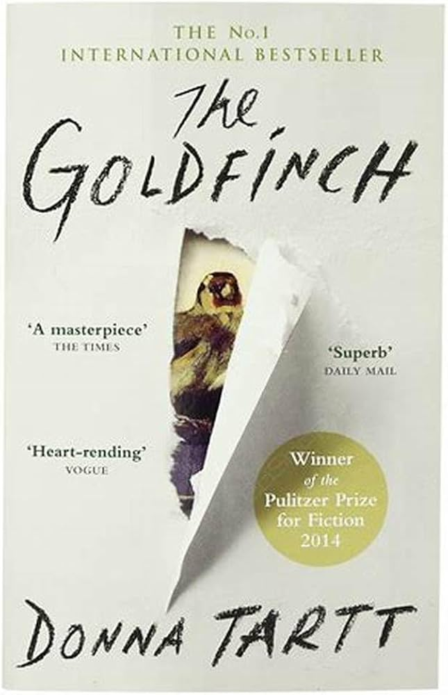

Back to Main Page
The Goldfinch

- Title: The Goldfinch
- Author: Donna Tart
- Publisher: Little, Brown And Company
- Price: $29.99
- Summary: When he was young Theo Decker loses his mother in a bombing. The wishes of a dying man in the accident lead Theo to taking The Goldfinch, a famous and beautiful painting. As Theo grows he must grapple with the trauma from his past, the danger of his present, and the uncertainty of the future, all the while hounded by his connection to the Goldfinch. Readers will be on the edge of their seat as they read this captivating thriller.
- Reviews:
- This Substack is called Vinay Prasad’s Observations and Thoughts, and, though my attention typically centers on medical topics, today’s post will be under the broader theme of my interests—a book review of Donna Tartt’s The Goldfinch. (spoiler alert denoted below).
People close to me will not be surprised to see a book review in these pages. Since I was 10 years old, I have been in love with literature. I read compulsively, obsessively—staying awake till 4 in the morning to finish a novel with school looming the next day, or reading for 14 or 16 hours non-stop on a rainy weekend day or from lift off to touch down on an international flight, till my eyes were bleary. Donna Tartt’s writing takes me back to my adolescence—being so enamored by a book that it is all consuming. Under that spell, the pleasure of reading surpasses anything else I could be doing. Well, almost anything.
A few months ago, I read Tartt’s first book The Secret History, and found her to be delightful and lyrical. That novel--- written in her mid twenties—centers on two crimes committed by a group of Classics students at a small liberal arts school in the northeast. The writing is dazzling. The plot rockets forward.
Two decades later, Tartt would write the Goldfinch. I have long believed that in contrast with scientists—who are often most creative and inventive in their 20s and 30s—great fiction writers are at the peak of their craft in their 50s and 60s. No one exemplifies this more than Philip Roth, whose books of the 1990s-2000s remain one of the most illuminative portraits of life in twenty century America. To me, The Human Stain is his crowning achievement.
The Goldfinch is a lengthy book—over 750 pages—but when the weight shifted in my hands, and there were just 200 pages between me and the end, I felt sad. I started to read more slowly. I wanted to make it last, knowing that it would be some time before I find another book as splendid, dazzling and sublime.
The book is a work of art; a tightly wound story that tackles the eternal themes of life: Love—with careful consideration of its most beautiful and cruelest form: unrequited love; Fathers and sons—how we are shaped in their image even if we do not think or wish so; The death of a parent. Morality and fate—do good things only come from good actions? Or can good come from bad?—Meaning—what is the purpose of life and art in an ephemeral world; Friendships over a lifetime—how we come to love our friends.
Tartt takes on these themes with a plot set in motion with a bomb blast and a borrowed painting. Her story is intricate, spanning decades in time, geography, a half dozen or more key characters, and yet, it seems so perfect—finishing the book is like snapping the final piece of the puzzle in place.
*spoiler alert, in what follows*
For a moment, I found her choice of the painting itself, Fabritius’ Goldfinch, a cliché. Of course, it had to be a painting by a painter killed in a bomb blast to be borrowed in a bomb blast. And I don’t use the world stolen because no one who reads the book can believe that is what he did. But I granted her that illusion, and then, as I finished the book, I realized it could have been no other painting or painter. In many ways, the painting has its own destiny.
Theo’s relationship to his father is portrayed mercilessly. His father is a drunk, a drug addict, a man who would risk the fortunes of his own son to further his addiction, and Theo hates that. Then we watch Theo grow up to become a drunk, a drug addict, a man whose forgeries risk the fortunes of Hobie, whom he loves as a father.
Theo is his father’s son. He inherits the easy with which some men lie—and deceive—how deception becomes a pastime in and of itself—apart from instrumental ends. As Xandra prophecized, Theo is more like his father than he would admit.
Theo starts the book noting how different his life would have been if not for the death of his mother. This is the eternal question for any child who lost his parent at a young age. Then on page 723, Tartt describes Theo’s dreams of his mother. Even in his dreams, he cannot touch her. She is always out of grasp. Until the very moment he needed her guidance most. For those of us who have lost someone close, Tartt captures this painful experience of not being to touch them even in your dreams.
Unrequited love—who hasn’t felt its pain? When he cannot be with Pippa, Theo plays her favorite Arvo Part, and reads novels she had read to gain access to her thoughts— haven’t we all done that?
As is often the case, the object of our desires is someone we don’t truly understand. Not until the final section does Theo recognize Pippa’s parallel addiction. Can two people be so similar they aren’t compatible? Their weaknesses feed off each other. Pippa is smart enough to recognize this risk, does he accept her final answer? The reader is left to wonder, perhaps root for them in spite of it all.
Kitsey, the perfect woman. She embodies making the “right” choices in life—the perfect pairing for Theo and she is correct that, in most ways, life with her will be predictable and good. And yet, the reader feels the spark is missing. We aren’t left wondering what she thought about his absence over Christmas. We have little sympathy towards her plight— being jilted at your engagement party.
Yet, most of our own lives are propelled by a series of choices that resemble Kitsey herself—predictable choices, what our parents or sister wants for us. Tartt leaves us in final limbo on this question, and we can only wonder what Theo will choose.
[On a side note: I have long believed that a great sin in medicine is that path to become a doctor inherently selects for people who make the Kitsey choice every day of their lives, and these folks struggle to understand the many people in the world who would rather be alone, pinning after Pippa. This spills over into all their behavior— including risking challenging accepted dogma or generally being risk taking and courageous.]
The painting, the Goldfinch, becomes a metaphor for the trajectory of all our lives. It bounces around all over the world, chained to whomever holds it. Then, in its final act, it serves a purpose larger than itself. It releases several paintings long lost. Did Welty envision this journey when he asked Theo to take it? Did the goldfinch finally break free of the chain that tied it to its nest? Did Theo get precisely what he wanted? And, more: will the painting one day survive a third bomb blast— the haunting conclusion to the closing paragraph…
“And I add my own love to the history of people who have loved beautiful things, and looked out for them, and pulled them from the fire, and sought them when they were lost, and tried to preserve them and save them while passing them along literally from hand to hand, singing out brilliantly from the wreck of time to the next generation of lovers and the next.”
That is also what I think Tartt’s answer is to the Big— capital B- question. And perhaps the best answer for the meaning of life without God. For the artist— the answer is to create something so beautiful, so transcendent— that people want to pass it along forever, a form of immortality. For the scientist— it is to make a discovery that lasts forever— or changes the arc of humanity. At least, the artist or scientist has to believe this, lest they be sucked in the vortex that leads one to take a mixture of booze and benodiazepines in a hotel in Amsterdam. In Tartt’s particilar case, I think she has succeeded—the book itself is literally her Goldfinch. [As a philosopher, writer and doctor, this is not exactly my answer to the Big question, but I will save that for a longer form]
And, then there are the quotes I flagged, dog-earing the book 50 times, and writing furiously in the margins, let me leave you with a few. Here, what art means to us:
And then this, the very best, on Good and evil. Having witnessed so much in my personal life, and even more in the 18 years I have been in medicine, I know Boris is right.
In our modern world, I cannot help feel pity towards the children (not all of them are young) who constantly try to split the world into black and white, and cancel the ‘bad people.’ They are ignorant to most of the human experience. They have never had to make hard choices where there is no good answer, and not answering is not possible. They have never had to do bad things in order to do great ones. Nor do they recognize that actions they view as virtuous result in tremendous harm. Part of maturity is to learn that “the world is much stranger than we know or can say.”
The Goldfinch was a gorgeous, sumptuous book, displacing my prior favorites Sometimes a Great Notion and El Amor en Los Tiempos Del Colera. The only consolation in finishing the book in 2023 is knowing that it has been 10 years since Tartt’s last book. The next one may arrive any day now. I will be waiting.
PS Donna Tartt if you read this, and are in SF, please drop me a line.
- Let us consider the problems of the long novel, in which the heft is apt to come in for almost as much critical examination as the content. There is, for instance, Jack Beatty’s famous critique of James A. Michener’s “Chesapeake” (865 pages): “My best advice is don’t read it; my second best is don’t drop it on your foot.” Presumably, Beatty read it — or at least skimmed it — before offering these helpful hints, but you get the idea. In this hurry-scurry age, big books are viewed with suspicion, and sometimes disdain. The book buyer’s suspicions are more justifiable. The critic, after all, is being paid to read. Consumers must spend their hard-earned cash for the same privilege. Then there’s the question of time. Prospective buyers have every right to ask: “Do I really want to give two weeks of my reading life to this novel? Can it possibly be worth it when there are so many others — most a good deal shorter — clamoring for my attention?”
Last, consider the novelist — in this case Donna Tartt, whose first novel, “The Secret History,” published in 1992, was greeted with critical hosannas and excellent sales. Her follow-up, “The Little Friend,” was published 10 years later. This means she labored over “The Goldfinch,” her latest novel, for at least as long. Such a prodigious investment of time and talent indicates an equally prodigious amount of ambition, but surely there must be periods of self-doubt. To write a novel this large and dense is equivalent to sailing from America to Ireland in a rowboat, a job both lonely and exhausting. Especially when there are storms. Suppose, the writer thinks (must think), this is all for nothing? What if I’m failing and don’t know it? What if I make the crossing and am greeted not with cheers but with indifference or even contempt?
It’s my happy duty to tell you that in this case, all doubts and suspicions can be laid aside. “The Goldfinch” is a rarity that comes along perhaps half a dozen times per decade, a smartly written literary novel that connects with the heart as well as the mind. I read it with that mixture of terror and excitement I feel watching a pitcher carry a no-hitter into the late innings. You keep waiting for the wheels to fall off, but in the case of “The Goldfinch,” they never do.
Like the best of Dickens (I will not be the last to make this comparison), the novel turns on mere happenstance — in this case, a heavy rainstorm in New York City. Theo Decker, our adolescent narrator, has been suspended from his school. He and his well-loved mother (“Everything came alive in her company; she cast a charmed theatrical light”) set off for a “conference” with school officials but duck into the Metropolitan Museum of Art to get out of the weather. There is a terrorist bombing, and many people are killed. One is a woman with a spray-on tan and a blouse printed with Fabergé eggs: “Her skin had a healthy apricot glow even though the top of her head was missing.” Audrey Decker, Theo’s mother, is another casualty.
Of course, all this is an alternate history (or a secret history, if you prefer). No such bombing ever happened, and the painting that a dazed and frightened Theo spirits out of the wreckage — “The Goldfinch,” made in 1654 by Carel Fabritius — was never stolen. It resides in the Royal Picture Gallery of The Hague. This in no way spoils Tartt’s charmed narrative, which follows 10 years of Theo’s adventures.
The first note is one of “Rebecca”-like anxiety. The unnamed narrator of that book begins by saying, “Last night I dreamt I went to Manderley again.” Theo starts in a fashion so similar it could be an hommage (but probably isn’t): “While I was still in Amsterdam, I dreamed about my mother for the first time in years.” He may not often dream of her, but Audrey Decker rarely leaves this 21st-century Oliver Twist’s mind. Surprisingly few novelists write well of grief, but Tartt — whose language is dense, allusive and so vivid it’s intoxicating — does it as well as it can be done. “I had fallen off the map,” Theo says. “The disorientation of being in the wrong apartment, with the wrong family, . . . groggy and punch-drunk, weepy almost. . . . I kept thinking I’ve got to go home and then, for the millionth time, I can’t.”
Theo washes up with the poshy-posh Park Avenue Barbour family instead of in the workhouse, and meets a kindly furniture restorer named James Hobart (“but everyone calls me Hobie”) — a Dickensian character if there ever was one — who will become a friend for life. He also re-encounters Pippa, a girl he observed with fascination at the Met just before the world exploded around him. She has been badly injured but will recover and, as in Browning’s “Pippa Passes,” her periodic appearances in the narrative signal large changes.
If there’s a Fagin in Theo’s life, it’s his father, who spirits him away to Las Vegas — not the gaudy Strip, but a sinister exurban development where most of the houses are empty, the streets fill with blown sand and Domino’s won’t deliver. Theo regards his new room with dismay. “It seemed like the kind of room where a call girl or a stewardess would be murdered on television.”
Dad is an alcoholic and a compulsive gambler. His girlfriend, the hilarious (and ultimately sympathetic) Xandra, pops pills and snorts coke. With such adult caregivers, we aren’t surprised when Theo hooks up with Boris Pavlikovsky, Tartt’s take on the Artful Dodger and this novel’s most brilliantly drawn character. Boris may be a little too naïve about America for such a wise child, and his constant patter is sometimes reminiscent of Boris Badenov (“Must find moose und squirrel!”), but his jittery good humor, boundless energy and flash charm are impossible for Theo — and us — to resist. Tartt depicts the friendship of these two cast-adrift adolescent boys with a clarity of observation I would have thought next to impossible for a writer who was never part of that closed male world: the interminable talk and speculation, the endless TV watching and pizza eating, the dope smoking and small thefts, the kind of rapport in which a single cocked eyebrow can provoke howls of helpless laughter.
Yet always, running through the novel like a power chord that may modulate but never quite dies, is the painting of Fabritius’ goldfinch, which Theo smuggles through his troubled early years — it’s his prize, his guilt and his burden, “this lonely little captive,” “chained to his perch.” Theo is also chained — not just to the painting, but to the memory of his mother and to the unwavering belief that in the end, come what may, art lifts us above ourselves. “The painting,” he observes, “was the still point where it all hinged: dreams and signs, past and future, luck and fate.”
We get Dickensian dollops of suspense — most notably a hair-raising Nighttown adventure in pursuit of dangerous gangsters — and plenty of brilliant characterization. Of Mrs. Barbour, for instance: “Even when she was standing right next to you she sounded as if she were relaying transmissions from Alpha Centauri.”
There are a few missteps, yes. It’s hard to believe that television coverage of a terrorist attack like the one Tartt imagines would be interrupted with mattress commercials, and there’s a lot more about furniture restoration than I needed. But for the most part, “The Goldfinch” is a triumph with a brave theme running through it: art may addict, but art also saves us from “the ungainly sadness of creatures pushing and struggling to live.” Donna Tartt has delivered an extraordinary work of fiction.
That said, don’t drop it on your foot.
- Reason for Purchase: The Goldfinch is a must have for the library for a variety of reasons. One such reason is that it deals with many of the issues that are important to the populace, such as crime and poverty as seen when Theo’s father dies due to threats from a loan shark and when Theo is roped into trying to steal the painting later in the book. Additionally, the book was adapted into an award-winning film which would be of great interest to those in the film industry. Those who hear great things on a movie are often curious as to whether the book they are adapted from is as good. It is for these reasons that I believe that The Goldfinch is a great choice for the library of Beak City.